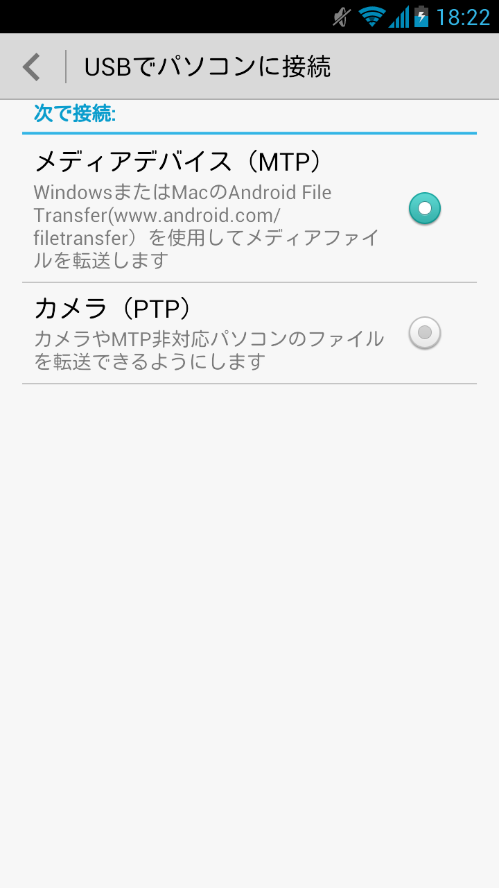
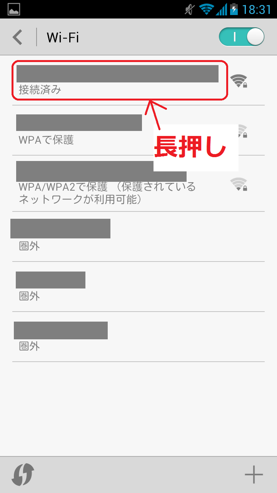
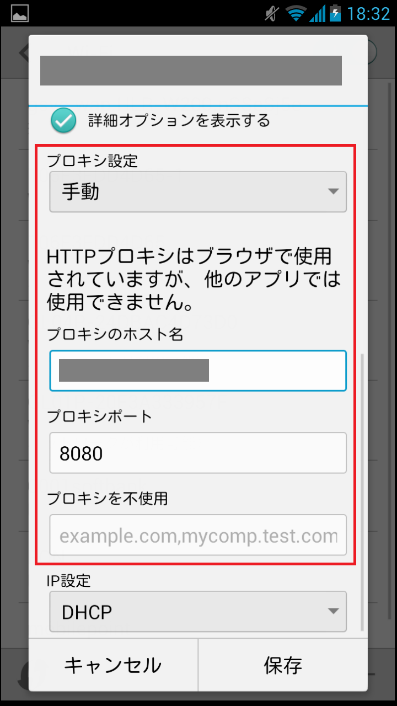

カテゴリ: Android
emobileのGL07Sを購入しました。
使わないプリインストールアプリをサクサク削除したり無効化出来るのが気持ちいいです。
スクリーンショットは「通知パネルのショートカット」から「スクリーン」を選ぶと保存出来ました。
USB接続すると、「USBでパソコンに接続」という画面が表示されて、「メディアデバイス」として接続するか「カメラ」として接続するか選択するようになってます。(SDカードが内蔵されてるようではないので、そのへんの兼ね合い？)

→「メディアデバイス」として接続することで、外部ストレージ領域全体をWindowsからアクセス出来ます。
→「カメラ」として接続すると、デジタルカメラのフォルダにしかアクセスできなくなります。
最後にHTTP(S) Proxyについてですが、WiFi接続設定にHTTP(S) Proxyを設定できる欄が有り、アプリによってはroot化しなくともその設定だけでHTTP(S) Proxyを利用するようになってくれました。
まず、接続中のWiFiアイテムを長押しします。

するとWiFi接続を編集出来ますので、「プロキシ設定」を「手動」にして、外部のProxyホストとポートを設定します。

これにより、以下のアプリが自動的にHTTP/HTTPSでプロキシを利用してくれました。HTTPSについてはBurpのPortSwigger証明書を外部ストレージ経由でインストールし、証明書検証をpassするようにしてます。
- 標準ブラウザ
- はてなブックマーク
- Facebookアプリ(多分公式)
- Yahoo!アプリ
- Y!乗換案内
- Instapaper
HTTPSについてですが、確実にBurpでHTTPS通信を取れたのは標準ブラウザとFacebook、Instapaperまでです。それ以外については、HTTPS通信するような操作まではしてないので、HTTPS通信が発生してなかったっぽい。
Twitterアプリ(公式)については、通信エラーになってしまい確認出来ませんでした。ただ、通信エラーの原因がHTTPSによる証明書関連の検証エラーだとすれば、もしかしたらProxyを利用していることはしているのかもしれません。独自に証明書検証してるとかで、Android側にインストールされたPortSwiggerのCA証明書が弾かれた可能性があります・・・が、特にadbでログチェックしてみたわけでもないのでそこは良くわかりません。
さしあたり、root化が必要なレベルのアプリは入れる予定がありませんので、ひとまずこれで十分です。